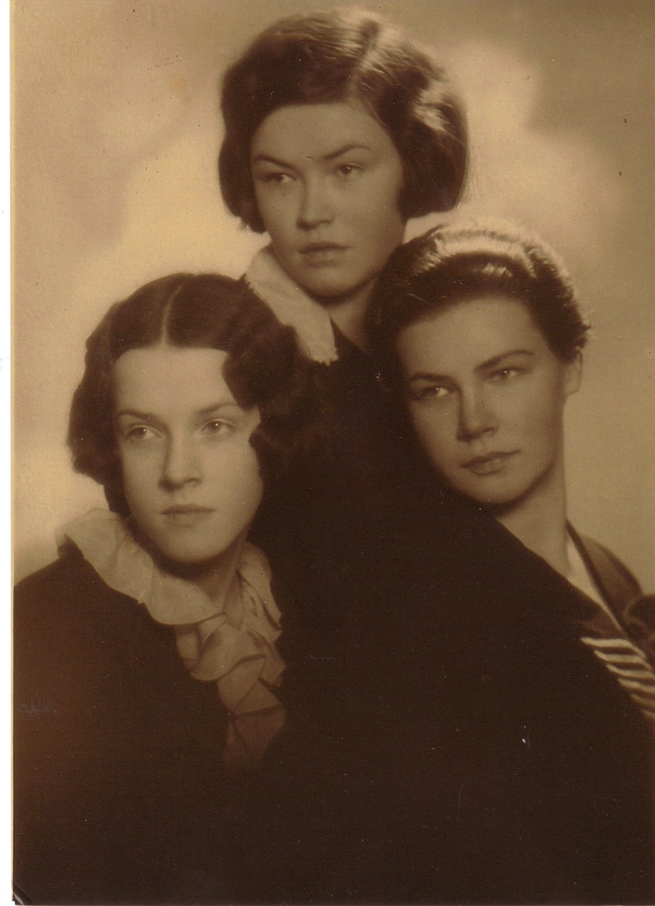

Elvīra Antonija Sirlaka 1912–2011
Peter's grandmother.
Also recorded as Elvira Antonie Sirlak (1912 baptism); Elvīra Danenberga; Elvira A. Danenbergs; Danenbergs Elvira; Elvīra Sirlaks (married name Danenbergs).
Elvīra Antonija Sirlaka was born on 9 Jan 1912 in Rīga, Vidzeme, Latvia3,4,5,6,7,8,9, the daughter of Mārtiņš Vilhelms Sirlaks and Emma Smukule3,8,60,61. She married Arvīds Fricis Danenbergs on 25 Jun 1941 in Litene, Vidzeme, Latvia62,63. She arrived at Boston, Massachusetts, United States on 7 Jul 194941,42. She applied for US citizenship on 16 Jun 1955 at Ohio, United States43. She died on 18 Jun 2011 in Milwaukee, Milwaukee County, Wisconsin, United States44,45,46,47,48 and was buried at Arlington Park Cemetery, Greenfield, Greenfield (Arlington Park Cemetery), Milwaukee County, Wisconsin, United States49,50,51,52.
Family
- Parents
- Mārtiņš Vilhelms Sirlaks 1883–1942 and Emma Smukule 1886–1970 documented
- Husband
- Arvīds Fricis Danenbergs 1913–1996 · married on 25 Jun 1941 in Litene, Vidzeme, Latvia62,63
- Children
- Peter Valentins Danenbergs b. 1942 documented
- Kalvis Danenbergs b. 1946 documented
- Liga Danenberg b. 1946 documented
Life events
| Event | Date | Place and details |
|---|---|---|
| Lived | bet 1912 and 1914 | Torņakalns, Rīga, Vidzeme, Latvia11 |
| Born | 9 Jan 1912 | Rīga, Vidzeme, Latvia Old Style (Julian) date: 27 Dec 19113,4,5,6,7,8,9 |
| Baptised | 3 Mar 1912 | St Martin's church, Rīga, Vidzeme, Latvia Old Style (Julian) date: 19 Feb 19128 |
| Lived | bet 1914 and 1919 | Vinterkalns, Cēsis, Cēsis district, Vidzeme, Latvia12 |
| Lived | 1914 | Cēsis, Cēsis district, Vidzeme, Latvia13 |
| Education | bet 1925 and 1929 | Cēsis, Cēsis district, Vidzeme, Latvia Bērzaine gymnasium, Cēsis35 |
| Lived | bet Jun 1937 and Sep 1937 | Jaunjelgava, Kurzeme (Courland), Latvia14 |
| Education | 1941 | Rīga, Vidzeme, Latvia In 1941 she graduated from the Pharmacy Department ('Farmacijas nod.') of the Faculty of Chemistry of the University of Latvia with a master's degree ('ar maģistra gradu'); she spent her school years in Cēsis, and worked in Rīga and in several provincial pharmacies. From the 75th-birthday notice…6 |
| Married (civil) | 25 Jun 1941 | with Arvīds Fricis Danenbergs Litene, Vidzeme, Latvia62,63 |
| Education | 2 Sep 1941 | graduated from the University of Latvia, master of pharmacy According to an online family tree36 |
| Lived | bet Dec 1941 and 9 Jan 1942 | Litene, Vidzeme, Latvia15 |
| Married (church) | bet Dec 1941 and 9 Jan 1942 | with Arvīds Fricis Danenbergs St John's church, Cēsis, Cēsis district, Vidzeme, Latvia64,65 |
| Banns read | 7 Dec 1941 | with Arvīds Fricis Danenbergs St Anne's church, Jelgava, Kurzeme (Courland), Latvia66 |
| Lived | bet 1945 and 1949 | Haunstetten DP camp, Augsburg, Bavaria, Germany16 |
| Work | 1945 | 'Mag.-pharm.', 'In apotheke' (DP-2); 'Pharmacist' (IRO roll 1949)3 |
| Note | 4 Dec 1945 | Haunstetten DP camp, Augsburg, Bavaria, Germany As enquirer, Elvīra asked UNRRA Team 114 to trace 'VAIROGS [?]-TAMSONS, INGRIDE', female, born 1910, relationship 'RELATIVE'. Unidentified; a lead.1 |
| Arrived | 7 Jul 1949 | Boston, Massachusetts, United States41,42 |
| Lived | 13 Jul 1949 | Liberty Township, Mercer County, Ohio, United States17,18 |
| Lived | bet 1953 and 1959 | Tiffin, Ohio, United States According to an online family tree19 |
| Married | bet 1953 and 1956 | with Arvīds Fricis Danenbergs According to an online family tree67 |
| Naturalisation | 16 Jun 1955 | Ohio, United States43 |
| Note | 14 May 1960 | Kalamazoo, Michigan, United States Front-page group photograph in Latvija Amerikā of the participants of the 35th-anniversary work celebration ('35 gadu darba svētki') of the Latvian women students' association Ausma ('Studenšu vienība Ausma') at Kalamazoo. The caption names the front row from the left: E. Liepiņa, I. Liniņa, N.…53 |
| Lived | Mar 1978 | Decatur, Michigan, United States20,21,22 |
| Note | 12 Aug 1978 | Grand Rapids, Michigan, United States Report "Zemnieku diena Mežvidos" (Farmers' Day at Mežvidi), 12 August [1978: the year is the issue year; the sentence says "12. augustā"]. In the rye-bread tasting ("rudzu maizes cepšana") ten participants brought loaves; judged by points, the best was Maiga Kalniņa's (35 points), 2nd Anatols…54 |
| Note | 22 Sep 1982 | Garezers (Latvian centre), near Three Rivers, Michigan, United States Laiks, 22 Sep 1982, p. 6, article "Maza, bet aktīva DV apvienība" (the Latvijas Ciems Daugavas Vanagi branch). Elvīra is named twice in the list of the branch's officers: secretary of the audit committee (revīzijas komisija) and secretary of the Vanadzes chapter (vanadžu kopa), whose chairwoman is…55 |
| Note | 19 Feb 1984 | Garezers (Latvian centre), near Three Rivers, Michigan, United States 2, DIVL81): '… par vanadžu kopas priekšnieci E. Danenbergu, vietnieci A. Hausmani, sekretāri E. Loginu un saimniecības daļas vadītāju Fr. Ozoliņu.' E. Danenberga is elected head (priekšniece) of the vanadzes group of the Latvijas ciems branch, deputy A. Hausmane. Initial only; the same page's farm…56 |
| Work | Jan 1987 | Tiffin, Ohio, United States The notice says: 'Strādāja par farmaceiti Tiffin Ohio' — she worked as a pharmacist in Tiffin, Ohio — after settling in Ohio in the USA, and together with her husband agronomist Arvīds raised 2 sons and a daughter. No years are given for the Tiffin job: the sweep's '1950/1965' is its own estimate,…6 |
| Note | 20 Jul 1991 | Garezers (Latvian centre), near Three Rivers, Michigan, United States DV monthly, Sep 1991: 'vanadžu kopas pr-ce E. Danenberga' is first from the left in the seated row of the 1991 board photograph; at the 20 July [1991] meeting association chairman Ed. Ozoliņš presented 'DV CV Atzinības rakstu' (DV Central Board certificate of appreciation) to 'vanadžu kopas pr-cei…57 |
| Note | 20 Jul 1991 | Garezers (Latvian centre), near Three Rivers, Michigan, United States Daugavas Vanagu Mēnešraksts, issue 1064082, in the "ASV" column. The Latvijas Ciems DV branch hosted the 13th annual Midwest (Vidienes) DV branches' gathering on 20 July [year per Periodika: 1991; the printed year not read on the page text I examined]. The branch chairman Ed. Ozoliņš presented the…58 |
| Note | 23 Nov 1992 | Grand Rapids, Michigan, United States Laiks, 'Grandrapidu chronika' (Grand Rapids column): Berta Buša, née Ludviga, born 16 June 1908 in Dundaga parish, a descendant of Livonians (lībieši), baptised and confirmed at Mazirbe church, studied at the University of Latvia pharmacy faculty, died suddenly at home on 17 November [1992], aged…59 |
| Lived | 10 Feb 1996 | Cassopolis, Cass County, Michigan, United States According to an online family tree23 |
| Lived | 19 Feb 1996 | Cassopolis, Cass County, Michigan, United States24 |
| Lived | 1997 | Garezers (Latvian centre), near Three Rivers, Michigan, United States25 |
| Lived | 9 Jan 2002 | Milwaukee, Milwaukee County, Wisconsin, United States26,27,28,29,30 |
| Lived | 9 Jan 2003 | Milwaukee, Milwaukee County, Wisconsin, United States31 |
| Lived | abt 2005 | Milwaukee, Milwaukee County, Wisconsin, United States According to an online family tree32 |
| Lived | 9 Jan 2006 | Milwaukee, Milwaukee County, Wisconsin, United States33 |
| Lived | abt 2008 | Milwaukee, Milwaukee County, Wisconsin, United States According to an online family tree34 |
| Died | 18 Jun 2011 | Milwaukee, Milwaukee County, Wisconsin, United States44,45,46,47,48 |
| Buried | 25 Jun 2011 | Arlington Park Cemetery, Greenfield, Greenfield (Arlington Park Cemetery), Milwaukee County, Wisconsin, United States49,50,51,52 |
| Origin | Cēsis, Cēsis district, Vidzeme, Latvia According to the family's 2015 tree10 | |
| Education | Rīga, Vidzeme, Latvia University of Latvia, pharmacy (chemistry faculty)37 | |
| Work | parents: Mārtiņš Sirlaks and Emma. Pharmacist (farmaceite). Emigrated with her mother. "Mirdza un Elvīra bija ļoti glītas."38 | |
| Work | Litene, Vidzeme, Latvia pharmacist, drugstore at Litene39 | |
| Work | Farmaceite According to an online family tree40 |
Photographs


Records


![The full page of the record, with the part cited outlined in red: [Photograph] Studenšu vienības Ausma 35 gadu darba svētku dalībnieces Kalamazū, Latvija Amerikā, 14 May 1960, p. 1](../../records/evidence/s-periodika-124937-divl86-124937-p1/page-1.jpg)


Open questions
Sources
- UNRRA tracing enquiry (Annex C), Haunstetten, Dec 4 1945, DE ITS 3.1.1.2, ref. 3112147, DocID 81989971.
A | VAIROGS [?]-TAMSONS INGRIDE | F | 1910 / B | DANENBERGS-SIRLAKS ELVIRA | F | HAUNSTETTEN | RELATIVE
Maiden name: Regensburg-era and Augsburg lists give her as 'Elvira, geb. Sirlaks'; the UNRRA tracing form of Dec 1945 has 'DANENBERGS-SIRLAKS ELVIRA'
- MyHeritage family tree 'Dzimta' of Peter's third cousin (his family site), member GEDCOM export of 26 Oct 2026, I500141 (person-6500141), GEDCOM lines 9270–9401.
NAME Elvīra /Sirlaks/ · _MARNM Danenbergs
- AEF DP Registration Record, Danenbergs Elvira, Reg. No. 902081302 (copy; original is ObjId 66841166), DE ITS 3.1.1.1, folder DP0730, DocID 66841168.
1912. 9.1. Riga Vidzeme Latvia | lutheran | Mārtiņš Sirlaks | Emma Smukulis | Stende Kurzeme Latvia | Mag.-pharm. | In apotheke
DP-2: '1912. 9.1.' (year.day.month). Regensburg list: '9. 1.12 Riga'. The index line '09/01/1912' for 66841168 (= 1 Sept) is an indexing error.
- AEF DP Registration Record, Danenbergs Elvira, Reg. 902081302, DocID 66841166 and 66841168.
1912.9.1 Riga Vidzeme Latvia | Mārtiņš Sirlaks | Emma Smukulis
follow-up 2026-10-21. The two index rows are the original (66841166) and the Team 114 copy (66841168) of one card, Reg. 902081302. Card date is year.day.month ("1912.9.1" = 9 Jan 1912, as for Arvīds 1913.17.1); the index keyed it as 01/09/1912 and 09/01/1912. Same person.
- Declaration of Intention No. 133, Elvira Danenbergs, Celina, Ohio, 14 Aug 1950.
(5) I was born on Jan. 9, 1912 in Riga Latvia
Middle initial A. ('Elvira A.' in the 1950 census, public records, Find a Grave and her 2019 obituary listing). Torņakalns, per the memoir, is a district of Rīga, so this is consistent. The 2015 tree has 'Cēsis', which is wrong for her birth: Cēsis is where her sisters were born.
- Mūsu jubilāri: Elvīrai Danenbergai, dzim. Sirlaka, Daugavas Vanagu Mēnešraksts, January 1987, printed p. 77 (viewer p. 79 of the issue file), Daugavas Vanagu Mēnešraksts, 01.01.1987 (issue date from the library record; the masthead is not on this page), printed p. 77 = viewer p. 79 of issue 847623, article DIVL475, doc 60307711. The sweep cited p. 77 as the viewer page; the page is viewer p. 79 (viewer p. 77 is a different page). Signed E.O. (initials only; probably the Latvijas ciems DV association chairman E. Ozoliņš named in the 1991 board photo, but the page does not say)..
Elvīrai Danenbergai, dzim. Sirlaka, piepildījās 75 mūža gadi. Dzimusi 1912. g. 9. janv. Rīgā. Skolas gadus pavadījusi Cēsīs. 1941. g. beigusi LU Ķīmijas fakultātes Farmacijas nod. ar maģistra gradu. Strādājusi Rīgā un vairākās provinces aptiekās. ASV apmetusies Ohio, un kopā ar vīru agr. Arvīdu uzaudzināja 2 dēlus un meitu. Strādāja par farmaceiti Tiffin Ohio. Pārceļoties uz Mičigenu, dzīvo savā farmā Gaŗezera tuvumā. DV apvienībai Latvijas ciemā pievienojās 1982. g. un ir pašreizējās Vanadžu kopas vad. Jubilāri 9. janvārī sveica DV apv. vadība, Vanadžu kopas vadība un Ciema vanadzes. E.O.
Translation: Elvīra Danenberga, née Sirlaka, completed 75 years of life. Born 9 January 1912 in Rīga. She spent her school years in Cēsis. In 1941 she graduated from the Pharmacy Department of the Faculty of Chemistry of the University of Latvia with a master's degree. She worked in Rīga and in several provincial pharmacies. In the USA she settled in Ohio, and together with her husband agronomist Arvīds raised 2 sons and a daughter. She worked as a pharmacist in Tiffin, Ohio. Moving to Michigan, she lives on her own farm near Garezers. She joined the DV association in Latvijas ciems in 1982 and is the present head of the Vanadzes circle. On 9 January the jubilarian was congratulated by the DV association board, the Vanadzes circle board and the Ciems vanadzes. E.O.
Notice for her 75th birthday: born 9 January 1912 in Rīga ('Dzimusi 1912. g. 9. janv. Rīgā'). The same paragraph adds that, moving to Michigan, she lived on her own farm near Garezers; she joined the DV association in Latvijas ciems in 1982 and is the current head of the Vanadzes circle (Vanadžu kopa); congratulated on 9 January by the DV association board, the Vanadzes board and the Ciems vanadzes. The preceding paragraph (not about her) is for Rudolfs Līdums.
- Mūsu jubilāri: Elvīrai Danenbergai, dzim. Sirlaka, Daugavas Vanagu Mēnešraksts, January 1987, printed p. 77 (viewer p. 79 of the issue file), Daugavas Vanagu Mēnešraksts, Nr.1 (01.01.1987), pp. 75–79.
Elvīrai Danenbergai, dzim. Sirlaka, piepildījās 75 mūža gadi. Dzimusi 1912. g. 9. janv. Rīgā. Skolas gadus pavadījusi Cēsīs. 1941. g. beigusi LU Ķīmijas fakultātes Farmācijas nod. ar maģistra grādu. Strādājusi Rīgā un vairākās provinces aptiekās. ASV apmetusies Ohio, un kopā ar vīru agr. Arvīdu uzaudzināja 2 dēlus un meitu. Strādāja par farmaceiti Tiffin Ohio. Pārceļoties uz Mičigenu, dzīvo savā farmā Garezera tuvumā.
Translation: Elvīra Danenberga, née Sirlaka, turned 75. Born 9 Jan 1912 in Rīga. Spent her school years in Cēsis. In 1941 graduated from the Pharmacy Section of the Chemistry Faculty of the University of Latvia with a master's degree. Worked in Rīga and several provincial pharmacies. In the USA settled in Ohio and with her husband, the agronomist Arvīds, raised 2 sons and a daughter. Worked as a pharmacist in Tiffin, Ohio. Moving to Michigan, she lives on her farm near Garezers.
Schooling in Cēsis. In 1941 she graduated from the Pharmacy Section of the Chemistry Faculty of the University of Latvia with a master's degree ("maģistra grāds"). She worked in Rīga and several provincial pharmacies, and in the USA as a pharmacist in Tiffin, Ohio. 9 January is confirmed by DV Milwaukee birthday lists for 2002, 2003 and 2006.
- Rīga St Martin Latvian congregation 1912, births and baptisms no. 82, LVVA f. 3036, apr. 4, l. 68, image 15 (right page, bottom), LVVA f. 3036, apr. 4, l. 68, image 15.
1911 Декабря двадцать седьмого (27) 7 ч. веч. | 1912 Февраля девятнадцатаго (19) | № 82 | Эльвира Антонія (Elvira Antonie). Род. торговецъ Мартинъ Вильгельмъ Сирлакъ (Sirlak) ев. лют. вѣр. и его жена Эмма, ур. Смукулъ ев. лют. вѣроиспов. Воспр.: Давидъ Сирлакъ, хозяинъ; Анна Смукулъ, дѣв.; Эрнестина Сирлакъ, дѣвица. Крещ. въ зал[ѣ][?] Ви[к]лес[ъ][?] паст. Гильде[?]
Translation: Born 27 December 1911, 7 p.m.; baptised 19 February 1912. No. 82. Elvira Antonie. Parents: trader Martin Wilhelm Sirlak, Ev.-Lutheran, and his wife Emma née Smukul, Ev.-Lutheran. Godparents: David Sirlak, farm owner; Anna Smukul, unmarried; Ernestine Sirlak, unmarried. Baptised [in …] by Pastor Hilde[?].
Born 27 Dec 1911 Julian (= 9 Jan 1912 Gregorian) at 7 p.m.; baptised 19 Feb 1912 Julian (= 3 Mar 1912 Gregorian). Full baptismal name Elvira Antonie. Father: trader (торговецъ) Martin Wilhelm Sirlak, Ev.-Luth.; mother: his wife Emma née Smukul (the ending '-улъ' written over a struck-out ending), Ev.-Luth. Godparents: David Sirlak, farm owner (хозяинъ) [= her uncle Dāvis]; Anna Smukul, unmarried; Ernestine Sirlak, unmarried. The last line, in another hand, reads roughly 'Крещ. въ зал[ѣ][?] Ви[к]лес[ъ][?] паст. Гильде[?]' — baptised [at …] by Pastor Hilde[?]; place uncertain. Entry no. 82 sits among March baptisms, i.e. it was registered late, which is why date-ordered searches missed it. No residence is given (so Torņakalns is not confirmed here).
- MyHeritage family tree 'Dzimta' of Peter's third cousin (his family site), member GEDCOM export of 26 Oct 2026, I500141 (person-6500141), GEDCOM lines 9270–9401.
BIRT · 9 JAN 1912
Date: a Gregorian date: the same day as ours. His record match: ASV Sociālās Apdrošināšanas Miršanu Indekss (SSDI), https://www.myheritage.lv/research/collection-10002/asv-soci%C4%81l%C4%81s-apdro%C5%A1in%C4%81%C5%A1anas-mir%C5%A1anu-indekss-ssdi?itemId=90579215&action=showRecord: 'Elvira Danenbergs | Dzimšana: 9. Jan 1912 | Miršana: 18. Jūn 2011 | Pēdēja dzīves vieta: Milwaukee, Wisconsin 53209, USA'. His record match: FamilySearch Family Tree, https://www.myheritage.lv/research/collection-40001/familysearch-family-tree?itemId=1246634255&action=showRecord: 'Elvīra Danenbergs (dzimusi Sirlaka) | Pēclaulību vārds: Elvīra Danenberga | Dzimums: Sieviete | Dzimšana: 9. Jan 1912 | Dzīves vieta: Starp 15. Nov 2007 un 20. Aug 2008 - Milwaukee, Milwaukee, Wisconsin, United States | Miršana: 18. Jūn 2011 | Apglabāšana: 2011 - Greenfield, Milwaukee, Wisconsin, United States | Vīrs: Arvīds Danenbergs'. His record match: Tributes.com, https://www.myheritage.lv/research/collection-10146/tributescom?itemId=5002276&action=showRecord: 'Elvira A. Danenbergs | Dzimšana: 9. Jan 1912 | Miršana: 18. Jūn 2011 | Apglabāšana: Brown Deer, Wisconsin | Piezīmes: Danenbergs, Elvira A. (nee Sirlaks) Born to Eternal Life Saturday, June 18, 2011 at the age of 99 years. Beloved wife of the late Arvids. Loving mother of Peter (Kathleen), Liga (Wolfhart) | Schubach and Kalvis (Melinda). Dear grandmother of Liga, Peter and Justin. Great grandmother of Mneme. Also …'. His record match: ASV Publisko Ierakstu Indekss, https://www.myheritage.lv/research/collection-10220/asv-publisko-ierakstu-indekss?itemId=322808885&action=showRecord: 'Elvira A Danenbergs | Dzimšana: 1912.gada 9. Jan | Pazīstams arī kā: Danenberg Elvira'.
- Peter's tree, danenberg.sql, 2007–2015, personae 6, provenance.
- My Life and Times (1912–1949), ¶9.
The first two years of my life were spent in Torņukalns (Tower Hill), a suburb of Rīga.
- Childhood home in Vinterkalns outside Cēsis (1914–1919).
At first we lived in a rented house in the Vinterkalns area, several km outside of Cēsis. … Mirdza was born in this house.
Moved with her parents in 1914 from Rīga to a rented house in the Vinterkalns area outside Cēsis (where her sister Mirdza was born on 17 January 1916) before her parents bought Lielā Katrīnas iela 13 in Cēsis by 1919.
- My Life and Times (1912–1949), ¶9.
When WWI started in 1914, they left Rīga … and went to Cēsis
- Summer 1937 pharmacy internship in Jaunjelgava.
I met Papa as follows. In the summer of 1937, I was practicing in the pharmacy at Jaunjelgava. Besides me, there were two other students from Rīga. One was Papa, who was engaged in surveying the area around the Daugava, because there were plans to build a hydroelectric plant there.
Lived in a fenced house in Jaunjelgava during the summer of 1937 while doing her student pharmacy practice at the Jaunjelgava pharmacy, where she met her future husband Arvīds Danenbergs.
- Baznīcas ziņas. Cēsu lauku draudze (in the article run headed 'Tautas Palīdzības darbs Taurenē'), Cēsu Vēstis, Nr.2 (09.01.1942), p. 3.
Laulāti: … Arvīds Danenbergs no Jelgavas ar Elvīru Sirlaks no Litenes aptiekas.
Translation: Married: … Arvīds Danenbergs of Jelgava to Elvīra Sirlaks of the Litene pharmacy.
Of the Litene pharmacy at her church wedding (Cēsis rural congregation, between mid-December 1941 and 9 January 1942), where her memoir has her working as a pharmacist.
- My Life and Times (1912–1949), ¶42.
We lived in Haunstetten for four years (1945-1949).
- Eight Latvian DP's Will Make Homes In Mercer Co., The Journal-Gazette (Fort Wayne, Indiana), 14 July 1949, p. 13.
LEARN TO BSE NEW GADGETS—Catl Hawks, farm manager, shows Mrs. Elvira Danenbergs and her mother, Mrs. Emma Sirlaks, how an electric kitchen range works. Mrs. Danenbergs and Mrs Sirlaks came lo this country from Latvia ajid are now residing ai the Smalley farm In Mercer County.
Translation: LEARN TO USE NEW GADGETS—Carl Hawks, farm manager, shows Mrs. Elvira Danenbergs and her mother, Mrs. Emma Sirlaks, how an electric kitchen range works. Mrs. Danenbergs and Mrs. Sirlaks came to this country from Latvia and are now residing at the Smalley farm in Mercer County.
Residing at the tenant house on the D. R. Smalley farm in Liberty Township, Mercer County, Ohio, age 37, with husband Arvids Danenbergs (36), children Peter (6) and twins Liga and Kalvis (2 1/2), and her mother Mrs. Emma Sirlaks.
- Household of Arwids F Danenbergs, Liberty Township, Mercer, Ohio.
Elvira A Danenbergs: Race = White; Census 10 April 1950 @ Liberty Township, Mercer, Ohio, United States; Birth 1912 @ Latvia; Residence 1949; RelationshipToHead=Wife; Age=38
After landing in Boston on 7 July 1949, she lived with her family on the farm of sponsor Robert M. Hawk in Liberty Township, Mercer County, Ohio (Rockford mailing address), enumerated there as 'Elvira A Danenbergs' (age 38) in the 10 April 1950 US Census and swearing her Declaration of Intention in Celina on 14 August 1950.
- MyHeritage family tree 'Dzimta' of Peter's third cousin (his family site), member GEDCOM export of 26 Oct 2026, I500141 (person-6500141), GEDCOM lines 9270–9401.
RESI · BET 1953 AND 1959 · Rural Delivery 2, Tiffin, Ohio, USA
His record match: ASV Sociālās Apdrošināšanas Miršanu Indekss (SSDI), https://www.myheritage.lv/research/collection-10002/asv-soci%C4%81l%C4%81s-apdro%C5%A1in%C4%81%C5%A1anas-mir%C5%A1anu-indekss-ssdi?itemId=90579215&action=showRecord: 'Elvira Danenbergs | Dzimšana: 9. Jan 1912 | Miršana: 18. Jūn 2011 | Pēdēja dzīves vieta: Milwaukee, Wisconsin 53209, USA'. His record match: FamilySearch Family Tree, https://www.myheritage.lv/research/collection-40001/familysearch-family-tree?itemId=1246634255&action=showRecord: 'Elvīra Danenbergs (dzimusi Sirlaka) | Pēclaulību vārds: Elvīra Danenberga | Dzimums: Sieviete | Dzimšana: 9. Jan 1912 | Dzīves vieta: Starp 15. Nov 2007 un 20. Aug 2008 - Milwaukee, Milwaukee, Wisconsin, United States | Miršana: 18. Jūn 2011 | Apglabāšana: 2011 - Greenfield, Milwaukee, Wisconsin, United States | Vīrs: Arvīds Danenbergs'. His record match: U.S. City Directories, https://www.myheritage.lv/research/collection-10705/us-city-directories?itemId=46884855&action=showRecord: 'Elvira Danenbergs | Dzīves vieta: Starp 1953 un 1959 - Tiffin, Ohio, USA | Adrese: Rural Delivery 2See who else lived at this address | Residence status: | Homeowner, Rents | Dzīvesbiedrs (ietverts): Arvids | Marriage (implied): Starp 1953 un 1956 | No | darbošanās: Pharmacist | Workplace: Mercy Hosp | Records: Gads Ieraksts | 1953 Danenbergs Elvira Mrs pharm Mercy Hosp h23 Apple 1956 Danenbergs Elvira (Arvids) …'.
- Decatur, Michigan farm of Arvīds and Elvīra Danenbergs.
17940 Dewey Lake St, Decatur, Michigan 49045-9477, USA 1. Aug 1995
Lived with her husband Arvīds on their farm at 17940 Dewey Lake Street in Decatur, Van Buren County, Michigan ('while we lived on the Decatur farm' in her memoir; recorded at 17940 Dewey Lake St, Decatur, MI 49045 on 1 August 1995 in the US Public Records Index).
- ALA mūža biedri, ALA Vēstis, March 1978 (viewer page 11 of the issue file), ALA Vēstis, 01.03.1978, issue 738751, article DIVL137 (doc 52053492), continued over viewer pages 10–12; the line is on viewer page 11. The sweep cited issue 739382 p. 8, which is wrong..
1655. Elvīra Danenbergs, Decatur, Mich.
Translation: 1655. Elvīra Danenbergs, Decatur, Mich.
ALA life member no. 1655 'Elvīra Danenbergs, Decatur, Mich.' in ALA Vēstis, March 1978 and 'Elvīra Danenberga, Decatur, Mich.' in ALA Žurnāls, May 1978 (two prints of the same list; see the Arvīds findings for the images). Listed directly after Arvīds (no. 1654).
- ALA mūža biedri, ALA Vēstis, March 1978 (viewer page 11 of the issue file), ALA Vēstis, 01.03.1978 (Periodika issue 738751, article DIVL137, doc 52053492); the heading "ALA mūža biedri" is on viewer p. 10, the entries 1654 and 1655 on viewer p. 11. Printed page number not checked (the sweep said p. 8). The sweep cited issue 739382 — wrong..
ALA mūža biedri [heading, p. 10] … 1653. Jānis A. Lazdiņš, Indidnapolis, Ind. 1654. Arvīds Danenbergs, Decatur, Mich. 1655. Elvīra Danenbergs, Decatur, Mich. 1656. Fricis Bērziņš, Flushing, N.Y.
Translation: ALA life members … 1653. Jānis A. Lazdiņš, Indianapolis, Ind. 1654. Arvīds Danenbergs, Decatur, Mich. 1655. Elvīra Danenbergs, Decatur, Mich. 1656. Fricis Bērziņš, Flushing, N.Y.
Listed as life member no. 1655 of the American Latvian Association (ALA mūža biedri, "ALA Life Members"), directly after no. 1654, Arvīds Danenbergs, both "Decatur, Mich." The list gives no dates of enrolment (1978-03 is the issue date; the members may have joined earlier) and no first-name details beyond Elvīra. Spelling on the page is "Danenbergs" (masculine form) for her.
- MyHeritage family tree 'Dzimta' of Peter's third cousin (his family site), member GEDCOM export of 26 Oct 2026, I500141 (person-6500141), GEDCOM lines 9270–9401.
RESI · 10 FEB 1996 · 56882 Point Rd, Cassopolis, Michigan 49031-9734, USA · AGE 84
His record match: ASV Sociālās Apdrošināšanas Miršanu Indekss (SSDI), https://www.myheritage.lv/research/collection-10002/asv-soci%C4%81l%C4%81s-apdro%C5%A1in%C4%81%C5%A1anas-mir%C5%A1anu-indekss-ssdi?itemId=90579215&action=showRecord: 'Elvira Danenbergs | Dzimšana: 9. Jan 1912 | Miršana: 18. Jūn 2011 | Pēdēja dzīves vieta: Milwaukee, Wisconsin 53209, USA'. His record match: FamilySearch Family Tree, https://www.myheritage.lv/research/collection-40001/familysearch-family-tree?itemId=1246634255&action=showRecord: 'Elvīra Danenbergs (dzimusi Sirlaka) | Pēclaulību vārds: Elvīra Danenberga | Dzimums: Sieviete | Dzimšana: 9. Jan 1912 | Dzīves vieta: Starp 15. Nov 2007 un 20. Aug 2008 - Milwaukee, Milwaukee, Wisconsin, United States | Miršana: 18. Jūn 2011 | Apglabāšana: 2011 - Greenfield, Milwaukee, Wisconsin, United States | Vīrs: Arvīds Danenbergs'. His record match: U.S. City Directories, https://www.myheritage.lv/research/collection-10705/us-city-directories?itemId=46884855&action=showRecord: 'Elvira Danenbergs | Dzīves vieta: Starp 1953 un 1959 - Tiffin, Ohio, USA | Adrese: Rural Delivery 2See who else lived at this address | Residence status: | Homeowner, Rents | Dzīvesbiedrs (ietverts): Arvids | Marriage (implied): Starp 1953 un 1956 | No | darbošanās: Pharmacist | Workplace: Mercy Hosp | Records: Gads Ieraksts | 1953 Danenbergs Elvira Mrs pharm Mercy Hosp h23 Apple 1956 Danenbergs Elvira (Arvids) …'.
- Crash victim moved to nursing home, South Bend Tribune (South Bend, Indiana), 1 March 1996, p. 7.
Crash victim moved to nursing home DOWAGIAC — Elvira Dan- enbergs, 84, of 56882 Point Road, Cassopolis, has been moved from Bronson Methodist Hospital, Kalamazoo, to a nursing home, according to a hospital spokesman. Danenbergs had been treated in the hospital’s trauma care unit since a two-car crash Feb. 19 that claimed the life of her husband, Arvids Danenbergs, 83. The acci; dent occurred about 2:45 p.m. at; the intersection of Decatur Road and Dutch Settlement Street.
Translation: Crash victim moved to nursing home DOWAGIAC — Elvira Danenbergs, 84, of 56882 Point Road, Cassopolis, has been moved from Bronson Methodist Hospital, Kalamazoo, to a nursing home, according to a hospital spokesman. Danenbergs had been treated in the hospital's trauma care unit since a two-car crash Feb. 19 that claimed the life of her husband, Arvids Danenbergs, 83. The accident occurred about 2:45 p.m. at the intersection of Decatur Road and Dutch Settlement Street.
Residing at 56882 Point Road, Cassopolis, Michigan; injured on 19 February 1996 in the two-car crash at Decatur Road and Dutch Settlement Street (six miles east of Dowagiac) that killed her husband Arvids Danenbergs; freed from the wreckage by Cassopolis Fire Department rescue squad, treated in the trauma care unit at Bronson Methodist Hospital, Kalamazoo, upgraded from serious to fair on 24 February 1996, and transferred to a nursing home by 1 March 1996.
- DV apv. ciemā „Latvija" sveic 1997. gada jubilārus, Daugavas Vanagu Mēnešraksts, July 1997, Daugavas Vanagu Mēnešraksts, 01.07.1997 (July 1997 issue) (Periodika issue 841095, article DIVL284, doc 59813240), viewer p. 83. The sweep cited issue 841827, article DIVL277, p. 51 and a title with "9. janv. 85 g. v. sasniedza"; the page has a list "sveic 1997. gada jubilārus" with no day and month. Ids wrong; page is issue 841095. Printed page number not checked..
DV APV. CIEMĀ „LATVIJA" SVEIC 1997. GADA JUBILĀRUS; Irma Strautniece - 90, Elvīra Danenberga - 85, Armands Pētersons - 85, Albīns Dravnieks - 80, …
Translation: DV branch in the village "Latvija" greets the 1997 jubilarians: Irma Strautniece - 90, Elvīra Danenberga - 85, Armands Pētersons - 85, Albīns Dravnieks - 80, …
The Daugavas Vanagi branch "ciemā Latvija" (the Latvija village at Garezers, Michigan) lists among its 1997 jubilarians "Elvīra Danenberga - / 85" (born 1912 → 85 in 1997). Only a list of names and ages; no date of birth on the page, and no month or day for the notice (1997 is the year of the list; 9 January is her known birthday from pl-021, not printed here).
- Milvoku DV apvienības jubilāri 2002. gadā (within "Ziņas un chronika"), Daugavas Vanagu Mēnešraksts, January 2002, Daugavas Vanagu Mēnešraksts, 01.01.2002 (January 2002 issue) (Periodika issue 989159, article DIVL302, doc 70315772), viewer p. 86. The sweep cited issue 993221, article DIVL389, p. 62 — wrong ids; the page is issue 989159 (zone DIVL302 is the whole "Ziņas un chronika" section, 30 viewer pages). Printed page number not checked..
Milvoku DV apvienības jubilāri 2002. gadā Janvārī: 7. janv. Indulis Raugulis – 80 g. v., 9. janv. Elvīra Danenberga – 90 g. v. Mūža biedre, 22. janv. Jānis Ķirpītis – 80 g. v. Mūža biedrs, 28. janv. Erna Zelča – 85 g. v.
Translation: Milwaukee DV branch jubilarians in 2002. January: 7 Jan. Indulis Raugulis – 80 years old, 9 Jan. Elvīra Danenberga – 90 years old. Life member, 22 Jan. Jānis Ķirpītis – 80 years old. Life member, 28 Jan. Erna Zelča – 85 years old.
Among the January 2002 jubilarians of the Milwaukee Daugavas Vanagi branch: "9. janv. Elvīra Danenberga – 90 g. v. Mūža biedre" (life member). Fits a birth on 9 January 1912 (pl-021). The list does not say she lived in Milwaukee, only that the Milwaukee branch greeted her; that she lived there is the sweep's inference (daughter Līga Šūbacha is named in Arvīds's obituary, pl-019, but no place is given there either).
- Mūsu jubilāri (Milvoku DV apvienība), Daugavas Vanagu Mēnešraksts, 2006-04-01.
MILVOKU DV APVIENĪBA SVEIC SAVUS ZĪMĪGU GADU SASNIEGUŠOS JUBILĀRUS Elvīra DANENBERGS - 94 gadus veca, dzimusi 9. janvārī
Translation: The Milwaukee DV branch congratulates its members with milestone birthdays: Elvīra Danenbergs, 94, born 9 January
From 2002 to 2006 she is listed among the Milwaukee DV branch's birthdays (not the Garezers one), so she had moved to the Milwaukee area by 2002. Before that: Decatur, Michigan (1978); a farm near Garezers (1980s–1996).
- MyHeritage family tree 'Dzimta' of Peter's third cousin (his family site), member GEDCOM export of 26 Oct 2026, I500141 (person-6500141), GEDCOM lines 9270–9401.
RESI · 6882 N Park Manor Dr, Milwaukee, Wisconsin 53224-4636, USA
His record match: ASV Sociālās Apdrošināšanas Miršanu Indekss (SSDI), https://www.myheritage.lv/research/collection-10002/asv-soci%C4%81l%C4%81s-apdro%C5%A1in%C4%81%C5%A1anas-mir%C5%A1anu-indekss-ssdi?itemId=90579215&action=showRecord: 'Elvira Danenbergs | Dzimšana: 9. Jan 1912 | Miršana: 18. Jūn 2011 | Pēdēja dzīves vieta: Milwaukee, Wisconsin 53209, USA'. His record match: FamilySearch Family Tree, https://www.myheritage.lv/research/collection-40001/familysearch-family-tree?itemId=1246634255&action=showRecord: 'Elvīra Danenbergs (dzimusi Sirlaka) | Pēclaulību vārds: Elvīra Danenberga | Dzimums: Sieviete | Dzimšana: 9. Jan 1912 | Dzīves vieta: Starp 15. Nov 2007 un 20. Aug 2008 - Milwaukee, Milwaukee, Wisconsin, United States | Miršana: 18. Jūn 2011 | Apglabāšana: 2011 - Greenfield, Milwaukee, Wisconsin, United States | Vīrs: Arvīds Danenbergs'. His record match: U.S. City Directories, https://www.myheritage.lv/research/collection-10705/us-city-directories?itemId=46884855&action=showRecord: 'Elvira Danenbergs | Dzīves vieta: Starp 1953 un 1959 - Tiffin, Ohio, USA | Adrese: Rural Delivery 2See who else lived at this address | Residence status: | Homeowner, Rents | Dzīvesbiedrs (ietverts): Arvids | Marriage (implied): Starp 1953 un 1956 | No | darbošanās: Pharmacist | Workplace: Mercy Hosp | Records: Gads Ieraksts | 1953 Danenbergs Elvira Mrs pharm Mercy Hosp h23 Apple 1956 Danenbergs Elvira (Arvids) …'.
- MyHeritage family tree 'Dzimta' of Peter's third cousin (his family site), member GEDCOM export of 26 Oct 2026, I500141 (person-6500141), GEDCOM lines 9270–9401.
RESI · 4185 W Schroeder Dr, Milwaukee, Wisconsin 53209-1134, USA
His record match: ASV Sociālās Apdrošināšanas Miršanu Indekss (SSDI), https://www.myheritage.lv/research/collection-10002/asv-soci%C4%81l%C4%81s-apdro%C5%A1in%C4%81%C5%A1anas-mir%C5%A1anu-indekss-ssdi?itemId=90579215&action=showRecord: 'Elvira Danenbergs | Dzimšana: 9. Jan 1912 | Miršana: 18. Jūn 2011 | Pēdēja dzīves vieta: Milwaukee, Wisconsin 53209, USA'. His record match: FamilySearch Family Tree, https://www.myheritage.lv/research/collection-40001/familysearch-family-tree?itemId=1246634255&action=showRecord: 'Elvīra Danenbergs (dzimusi Sirlaka) | Pēclaulību vārds: Elvīra Danenberga | Dzimums: Sieviete | Dzimšana: 9. Jan 1912 | Dzīves vieta: Starp 15. Nov 2007 un 20. Aug 2008 - Milwaukee, Milwaukee, Wisconsin, United States | Miršana: 18. Jūn 2011 | Apglabāšana: 2011 - Greenfield, Milwaukee, Wisconsin, United States | Vīrs: Arvīds Danenbergs'. His record match: U.S. City Directories, https://www.myheritage.lv/research/collection-10705/us-city-directories?itemId=46884855&action=showRecord: 'Elvira Danenbergs | Dzīves vieta: Starp 1953 un 1959 - Tiffin, Ohio, USA | Adrese: Rural Delivery 2See who else lived at this address | Residence status: | Homeowner, Rents | Dzīvesbiedrs (ietverts): Arvids | Marriage (implied): Starp 1953 un 1956 | No | darbošanās: Pharmacist | Workplace: Mercy Hosp | Records: Gads Ieraksts | 1953 Danenbergs Elvira Mrs pharm Mercy Hosp h23 Apple 1956 Danenbergs Elvira (Arvids) …'.
- MyHeritage family tree 'Dzimta' of Peter's third cousin (his family site), member GEDCOM export of 26 Oct 2026, I500141 (person-6500141), GEDCOM lines 9270–9401.
RESI · BET 1 MAY 1998 AND 1 NOV 2004 · 4185 W Schroeder Dr, Apt 310, Milwaukee, Wisconsin 53209-1126, USA
His record match: ASV Sociālās Apdrošināšanas Miršanu Indekss (SSDI), https://www.myheritage.lv/research/collection-10002/asv-soci%C4%81l%C4%81s-apdro%C5%A1in%C4%81%C5%A1anas-mir%C5%A1anu-indekss-ssdi?itemId=90579215&action=showRecord: 'Elvira Danenbergs | Dzimšana: 9. Jan 1912 | Miršana: 18. Jūn 2011 | Pēdēja dzīves vieta: Milwaukee, Wisconsin 53209, USA'. His record match: FamilySearch Family Tree, https://www.myheritage.lv/research/collection-40001/familysearch-family-tree?itemId=1246634255&action=showRecord: 'Elvīra Danenbergs (dzimusi Sirlaka) | Pēclaulību vārds: Elvīra Danenberga | Dzimums: Sieviete | Dzimšana: 9. Jan 1912 | Dzīves vieta: Starp 15. Nov 2007 un 20. Aug 2008 - Milwaukee, Milwaukee, Wisconsin, United States | Miršana: 18. Jūn 2011 | Apglabāšana: 2011 - Greenfield, Milwaukee, Wisconsin, United States | Vīrs: Arvīds Danenbergs'. His record match: U.S. City Directories, https://www.myheritage.lv/research/collection-10705/us-city-directories?itemId=46884855&action=showRecord: 'Elvira Danenbergs | Dzīves vieta: Starp 1953 un 1959 - Tiffin, Ohio, USA | Adrese: Rural Delivery 2See who else lived at this address | Residence status: | Homeowner, Rents | Dzīvesbiedrs (ietverts): Arvids | Marriage (implied): Starp 1953 un 1956 | No | darbošanās: Pharmacist | Workplace: Mercy Hosp | Records: Gads Ieraksts | 1953 Danenbergs Elvira Mrs pharm Mercy Hosp h23 Apple 1956 Danenbergs Elvira (Arvids) …'.
- Mūsu jubilāri, DV Milvoku Apv. sveic savus jubilārus, Daugavas Vanagu Mēnešraksts, March 2003, Daugavas Vanagu Mēnešraksts, 01.03.2003 (March 2003 issue) (Periodika issue 769576, article DIVL299, doc 54378933), viewer p. 81. The sweep cited issue 768788, article DIVL336, p. 61; the page is issue 769576 (zone DIVL299). Printed page number not checked..
MŪSU JUBILĀRI DV Milvoku Apv. sveic savus jubilārus Janvāŗa mēnesī dzimuši: [day omitted] Māra Daina Bekmane 70 g.v.; 9. janv. Elvīra Danenberga 91 g.v.; [day omitted] Skaidrīte Pāvele 75 g.v.
Translation: OUR JUBILARIANS. The Milwaukee DV branch greets its jubilarians born in January: [day omitted] Māra Daina Bekmane 70; 9 Jan. Elvīra Danenberga 91; [day omitted] Skaidrīte Pāvele 75.
"Mūsu jubilāri": DV Milwaukee branch greets its jubilarians; January: "9. janv. Elvīra Danenberga 91 g.v." No "life member" remark for her in this notice.
- MyHeritage family tree 'Dzimta' of Peter's third cousin (his family site), member GEDCOM export of 26 Oct 2026, I500141 (person-6500141), GEDCOM lines 9270–9401.
RESI · ABT 2005 · 9418 N Green Bay Rd, Apt 137, Milwaukee, Wisconsin 53209-1067, USA · AGE About 92-93
His record match: ASV Sociālās Apdrošināšanas Miršanu Indekss (SSDI), https://www.myheritage.lv/research/collection-10002/asv-soci%C4%81l%C4%81s-apdro%C5%A1in%C4%81%C5%A1anas-mir%C5%A1anu-indekss-ssdi?itemId=90579215&action=showRecord: 'Elvira Danenbergs | Dzimšana: 9. Jan 1912 | Miršana: 18. Jūn 2011 | Pēdēja dzīves vieta: Milwaukee, Wisconsin 53209, USA'. His record match: FamilySearch Family Tree, https://www.myheritage.lv/research/collection-40001/familysearch-family-tree?itemId=1246634255&action=showRecord: 'Elvīra Danenbergs (dzimusi Sirlaka) | Pēclaulību vārds: Elvīra Danenberga | Dzimums: Sieviete | Dzimšana: 9. Jan 1912 | Dzīves vieta: Starp 15. Nov 2007 un 20. Aug 2008 - Milwaukee, Milwaukee, Wisconsin, United States | Miršana: 18. Jūn 2011 | Apglabāšana: 2011 - Greenfield, Milwaukee, Wisconsin, United States | Vīrs: Arvīds Danenbergs'. His record match: U.S. City Directories, https://www.myheritage.lv/research/collection-10705/us-city-directories?itemId=46884855&action=showRecord: 'Elvira Danenbergs | Dzīves vieta: Starp 1953 un 1959 - Tiffin, Ohio, USA | Adrese: Rural Delivery 2See who else lived at this address | Residence status: | Homeowner, Rents | Dzīvesbiedrs (ietverts): Arvids | Marriage (implied): Starp 1953 un 1956 | No | darbošanās: Pharmacist | Workplace: Mercy Hosp | Records: Gads Ieraksts | 1953 Danenbergs Elvira Mrs pharm Mercy Hosp h23 Apple 1956 Danenbergs Elvira (Arvids) …'.
- Milvoku DV apvienība sveic savus zīmīgu gadu sasniegušos jubilārus (within "Mūsu jubilāri"), Daugavas Vanagu Mēnešraksts, April 2006, Daugavas Vanagu Mēnešraksts, 01.04.2006 (April 2006 issue) (Periodika issue 996290, article DIVL532, doc 70824489), viewer p. 100 (the notice is at the top of the page; Argon gives printed p. 98, not checked here). The sweep cited issue 999416, article DIVL423, p. 64; the page is issue 996290, viewer p. 100 (zone DIVL532 is the whole "Mūsu jubilāri" section, pp. 98–106). Printed page number not checked..
MILVOKU DV APVIENĪBA SVEIC SAVUS ZĪMĪGU GADU SASNIEGUŠOS JUBILĀRUS Elvīra DANENBERGS - 94 gadus veca, dzimusi 9. janvārī Anna MUNDECIEMS - 80 gadus veca, dzimusi [day omitted] Brigita KĀKULIS (mūža biedre) - 75 gadus veca, dzimusi [day omitted]
Translation: THE MILWAUKEE DV BRANCH GREETS ITS JUBILARIANS OF SIGNIFICANT AGES: Elvīra DANENBERGS - 94 years old, born [day omitted]; Anna MUNDECIEMS - 80, born [day omitted]; Brigita KĀKULIS (life member) - 75, born [day omitted]
"Milvoku DV apvienība sveic savus zīmīgu gadu sasniegušos jubilārus": first entry "Elvīra DANENBERGS - 94 gadus veca, dzimusi 9. janvārī" (not marked life member; the next entries Anna Mundeciems, Brigita Kākulis (mūža biedre) etc.). Born 9 January [1912] by the age; the page gives no year of birth.
- MyHeritage family tree 'Dzimta' of Peter's third cousin (his family site), member GEDCOM export of 26 Oct 2026, I500141 (person-6500141), GEDCOM lines 9270–9401.
RESI · ABT 2008 · Milwaukee, Wisconsin 53209, USA · AGE About 95-96
His record match: ASV Sociālās Apdrošināšanas Miršanu Indekss (SSDI), https://www.myheritage.lv/research/collection-10002/asv-soci%C4%81l%C4%81s-apdro%C5%A1in%C4%81%C5%A1anas-mir%C5%A1anu-indekss-ssdi?itemId=90579215&action=showRecord: 'Elvira Danenbergs | Dzimšana: 9. Jan 1912 | Miršana: 18. Jūn 2011 | Pēdēja dzīves vieta: Milwaukee, Wisconsin 53209, USA'. His record match: FamilySearch Family Tree, https://www.myheritage.lv/research/collection-40001/familysearch-family-tree?itemId=1246634255&action=showRecord: 'Elvīra Danenbergs (dzimusi Sirlaka) | Pēclaulību vārds: Elvīra Danenberga | Dzimums: Sieviete | Dzimšana: 9. Jan 1912 | Dzīves vieta: Starp 15. Nov 2007 un 20. Aug 2008 - Milwaukee, Milwaukee, Wisconsin, United States | Miršana: 18. Jūn 2011 | Apglabāšana: 2011 - Greenfield, Milwaukee, Wisconsin, United States | Vīrs: Arvīds Danenbergs'. His record match: U.S. City Directories, https://www.myheritage.lv/research/collection-10705/us-city-directories?itemId=46884855&action=showRecord: 'Elvira Danenbergs | Dzīves vieta: Starp 1953 un 1959 - Tiffin, Ohio, USA | Adrese: Rural Delivery 2See who else lived at this address | Residence status: | Homeowner, Rents | Dzīvesbiedrs (ietverts): Arvids | Marriage (implied): Starp 1953 un 1956 | No | darbošanās: Pharmacist | Workplace: Mercy Hosp | Records: Gads Ieraksts | 1953 Danenbergs Elvira Mrs pharm Mercy Hosp h23 Apple 1956 Danenbergs Elvira (Arvids) …'.
- My Life and Times (1912–1949), ¶19.
- MyHeritage family tree 'Dzimta' of Peter's third cousin (his family site), member GEDCOM export of 26 Oct 2026, I500141 (person-6500141), GEDCOM lines 9270–9401.
1941. IX 02. beigusi Latvijas Universitāti, farmācijas maģistre.
His note (no record named).
- My Life and Times (1912–1949), ¶29.
- Ainas Sirlakas atmiņas ("Vīstuči"), Aina Jurciņa née Sirlaka, Priekuļi, 1998, p. 9, section "PAR PĒTERA UN MARIJAS CETURTO BĒRNU MĀRTIŅU".
Viņiem bija 3 meitas: Elvīra, Mirdza un Rūta. Elvīra kļuva farmaceite, Mirdza žēlsirdības māsa, Rūta- vetārste.
Translation: They had 3 daughters, Elvīra, Mirdza and Rūta. Elvīra became a pharmacist, Mirdza a nurse, Rūta a veterinarian.
parents: Mārtiņš Sirlaks and Emma. Pharmacist (farmaceite). Emigrated with her mother. "Mirdza un Elvīra bija ļoti glītas."
- My Life and Times (1912–1949), ¶32.
- MyHeritage family tree 'Dzimta' of Peter's third cousin (his family site), member GEDCOM export of 26 Oct 2026, I500141 (person-6500141), GEDCOM lines 9270–9401.
OCCU · Farmaceite
- Manifest of In-bound Passengers (Aliens), No. 27, USAT General Blatchford, Bremerhaven 28 June 1949 → Boston 7 July 1949, NAID 76075234, image 80 of 651, object 76075314, file 41253_B124264-01101.jpg, lines 4–8.
DANENBERGS Arvids Rockford, Ohio 36 Ma Md I-849016 Latvian … ADMITTED JUL 7 1949 BOSTON, MASS.
Manifest 27, line 5; I-849017; age 37; Rockford, Ohio. (Emigration: IRO roll no. 609, Pharmacist.)
- My Life and Times (1912–1949), ¶42–43.
We applied to go to the US, which we entered in July, 1949. … The ship landed in Boston
- 84 Will Be Naturalized Thursday, Toledo Blade (Toledo, Ohio), 13 June 1955, p. 7.
Arvids Danenbergs, Tiffin, and Elvira Dancnbergs, Tiffin.
Translation: Arvids Danenbergs, Tiffin, and Elvira Danenbergs, Tiffin.
Naturalized as a U.S. citizen on Thursday, 16 June 1955 at 10 a.m. in the courtroom of U.S. District Judge Frank L. Kloeb in Toledo, Ohio, alongside her husband Arvids Danenbergs; residing at Tiffin, Ohio.
- S-fs-JPMS-PM7.
Elvira Danenbergs; Death 18 Jun 2011 Milwaukee, Wisconsin; Birth 09 Jan 1912; 18 Jun 2011 verified by family; issued Ohio
Age 99. The SSDI says 'verified by family'; last residence ZIP 53209. A later obituary listing reads: 'Danenbergs, Elvira A. nee Sirlaks Born to Eternal Life Saturday, June 18, 2011 at the age of 99 years....' (US Obituary Records 61K5-NDCT; the image is a text stub).
- Death Notice: Danenbergs, Elvira A. (Nee Sirlaks), Milwaukee Journal Sentinel (Milwaukee, Wisconsin), 23 June 2011, p. 16 (4B).
Danenbergs, Elvira A. (Nee Slrlaks) Bom to Eternal Life Saturday, June 18, 2011, at the age of 99 years. Beloved wife of the late Arvlds. Loving mother of Peter (Kathleen), Llga (Wolfhart) Schubach and Kalvls (Melinda). Dear grandmother of Liga, Peter and Justin. Great-grandmother of Mneme. Also survived by nieces, nephews, other relatives and friends here and in Latvia. Visitation, Saturday, at the FUNERAL HOME from 9-10AM with a Funeral Service at 10AM. Interment Arlington Park Cemetery. If so desired, memorials to the Latvian National Opera House or the Museum of the Occupation of Latvia appreciated. HERITAGE FUNERAL HOMES Klemmer-Scheuerell- Johnson-Relss Richard B. Lee Associate 6615 W. Oklahoma 414-321-7447 Guest Book & Directions www.heritagefuneral.com
Translation: Danenbergs, Elvira A. (Nee Sirlaks) Born to Eternal Life Saturday, June 18, 2011, at the age of 99 years. Beloved wife of the late Arvids. Loving mother of Peter (Kathleen), Liga (Wolfhart) Schubach and Kalvis (Melinda). Dear grandmother of Liga, Peter and Justin. Great-grandmother of Mneme. Also survived by nieces, nephews, other relatives and friends here and in Latvia. Visitation, Saturday, at the FUNERAL HOME from 9-10AM with a Funeral Service at 10AM. Interment Arlington Park Cemetery. If so desired, memorials to the Latvian National Opera House or the Museum of the Occupation of Latvia appreciated. HERITAGE FUNERAL HOMES Klemmer-Scheuerell-Johnson-Reiss Richard B. Lee Associate 6615 W. Oklahoma 414-321-7447 Guest Book & Directions www.heritagefuneral.com
Died Saturday, 18 June 2011, at age 99; widow of Arvids Danenbergs; mother of Peter (Kathleen), Liga (Wolfhart) Schubach, and Kalvis (Melinda); grandmother of Liga, Peter, and Justin; great-grandmother of Mneme; also survived by nieces, nephews, and relatives in the US and Latvia; visitation and funeral service Saturday, 25 June 2011 at Heritage Funeral Homes (Klemmer-Scheuerell-Johnson-Reiss, 6615 W. Oklahoma Ave., Milwaukee), with interment at Arlington Park Cemetery; memorials to the Latvian National Opera House or the Museum of the Occupation of Latvia.
- Elvira Danenbergs: Social Security Death Index (SSDI) Death Record.
Name: Elvira Danenbergs State of Issue: Ohio Date of Birth: Tuesday January 09, 1912 Date of Death: Saturday June 18, 2011 Est. Age at Death: 99 years, 5 months, 9 days Confirmation: Verified Last known residence: City: Milwaukee; Brown Deer; Glendale; River Hills County: Milwaukee State: Wisconsin ZIP Code: 53209
Social Security Death Index record: born 9 January 1912, died 18 June 2011 (age 99 years, 5 months, 9 days, verified); SSN issued in Ohio; last known residence ZIP 53209 (Milwaukee / Brown Deer / Glendale / River Hills, Milwaukee County, Wisconsin).
- Elvira A. Danenbergs (Nee Sirlaks), Milwaukee Journal Sentinel, 23 June 2011.
Danenbergs, Elvira A. (Nee Sirlaks) Born to Eternal Life Saturday, June 18, 2011, at the age of 99 years. Beloved wife of the late Arvids. Loving mother of Peter (Kathleen), Liga (Wolfhart) Schubach and Kalvis (Melinda). Dear grandmother of Liga, Peter and Justin. Great-grandmother of Mneme. Also survived by nieces, nephews, other relatives and friends here and in Latvia. … Interment Arlington Park Cemetery.
Aged 99. Middle initial 'A.' Funeral at Heritage Funeral Homes (Klemmer-Scheuerell-Johnson-Reiss), 6615 W. Oklahoma Ave, Milwaukee. Memorials suggested to the Latvian National Opera and the Museum of the Occupation of Latvia. No Latvian-press obituary was found on periodika.lv for 2011–2012: searched 'Danenberga', 'Danenbergs', 'Danenberg', 'Sirlaka' with date filters.
- MyHeritage family tree 'Dzimta' of Peter's third cousin (his family site), member GEDCOM export of 26 Oct 2026, I500141 (person-6500141), GEDCOM lines 9270–9401.
DEAT · 18 JUN 2011 · AGE 99
His record match: ASV Sociālās Apdrošināšanas Miršanu Indekss (SSDI), https://www.myheritage.lv/research/collection-10002/asv-soci%C4%81l%C4%81s-apdro%C5%A1in%C4%81%C5%A1anas-mir%C5%A1anu-indekss-ssdi?itemId=90579215&action=showRecord: 'Elvira Danenbergs | Dzimšana: 9. Jan 1912 | Miršana: 18. Jūn 2011 | Pēdēja dzīves vieta: Milwaukee, Wisconsin 53209, USA'. His record match: FamilySearch Family Tree, https://www.myheritage.lv/research/collection-40001/familysearch-family-tree?itemId=1246634255&action=showRecord: 'Elvīra Danenbergs (dzimusi Sirlaka) | Pēclaulību vārds: Elvīra Danenberga | Dzimums: Sieviete | Dzimšana: 9. Jan 1912 | Dzīves vieta: Starp 15. Nov 2007 un 20. Aug 2008 - Milwaukee, Milwaukee, Wisconsin, United States | Miršana: 18. Jūn 2011 | Apglabāšana: 2011 - Greenfield, Milwaukee, Wisconsin, United States | Vīrs: Arvīds Danenbergs'. His record match: Tributes.com, https://www.myheritage.lv/research/collection-10146/tributescom?itemId=5002276&action=showRecord: 'Elvira A. Danenbergs | Dzimšana: 9. Jan 1912 | Miršana: 18. Jūn 2011 | Apglabāšana: Brown Deer, Wisconsin | Piezīmes: Danenbergs, Elvira A. (nee Sirlaks) Born to Eternal Life Saturday, June 18, 2011 at the age of 99 years. Beloved wife of the late Arvids. Loving mother of Peter (Kathleen), Liga (Wolfhart) | Schubach and Kalvis (Melinda). Dear grandmother of Liga, Peter and Justin. Great grandmother of Mneme. Also …'.
- S-fs-QK1N-R1P9.
Elvira A. Sirlaks Danenbergs; Death 18 Jun 2011; Burial Greenfield, Milwaukee, Wisconsin; Birth 09 Jan 1912; age 99; findagrave GRid=139994199
Find a Grave memorial 139994199 (the cemetery name was not opened).
- Obituary: Danenbergs, Elvira A., Milwaukee Journal Sentinel (Wisconsin), 23 June 2011.
Visitation, Saturday, at the FUNERAL HOME from 9-10AM with a Funeral Service at 10AM. Interment Arlington Park Cemetery.
Interment at Arlington Park Cemetery following funeral service on Saturday, 25 June 2011 at Heritage Funeral Homes, 6615 W. Oklahoma Ave., Milwaukee.
- Elvira A. Sirlaks Danenbergs, Memorial 139994199.
Elvira A. Sirlaks Danenbergs 9 Jan 1912 – 18 Jun 2011 Arlington Park Cemetery Greenfield, Milwaukee County, Wisconsin Plot info: Block 37-A Lot 210 Space 8-a
The Find a Grave memorial has a grave photo (2015) and gives 9 Jan 1912 – 18 Jun 2011. Arvīds is NOT here: he was cremated in 1996 and the urn sent to Latvia.
- MyHeritage family tree 'Dzimta' of Peter's third cousin (his family site), member GEDCOM export of 26 Oct 2026, I500141 (person-6500141), GEDCOM lines 9270–9401.
BURI · 2011 · Greenfield, Milwaukee, Wisconsin, United States
His record match: FamilySearch Family Tree, https://www.myheritage.lv/research/collection-40001/familysearch-family-tree?itemId=1246634255&action=showRecord: 'Elvīra Danenbergs (dzimusi Sirlaka) | Pēclaulību vārds: Elvīra Danenberga | Dzimums: Sieviete | Dzimšana: 9. Jan 1912 | Dzīves vieta: Starp 15. Nov 2007 un 20. Aug 2008 - Milwaukee, Milwaukee, Wisconsin, United States | Miršana: 18. Jūn 2011 | Apglabāšana: 2011 - Greenfield, Milwaukee, Wisconsin, United States | Vīrs: Arvīds Danenbergs'. His record match: Tributes.com, https://www.myheritage.lv/research/collection-10146/tributescom?itemId=5002276&action=showRecord: 'Elvira A. Danenbergs | Dzimšana: 9. Jan 1912 | Miršana: 18. Jūn 2011 | Apglabāšana: Brown Deer, Wisconsin | Piezīmes: Danenbergs, Elvira A. (nee Sirlaks) Born to Eternal Life Saturday, June 18, 2011 at the age of 99 years. Beloved wife of the late Arvids. Loving mother of Peter (Kathleen), Liga (Wolfhart) | Schubach and Kalvis (Melinda). Dear grandmother of Liga, Peter and Justin. Great grandmother of Mneme. Also …'.
- [Photograph] Studenšu vienības Ausma 35 gadu darba svētku dalībnieces Kalamazū, Latvija Amerikā, 14 May 1960, p. 1, Latvija Amerikā, 14.05.1960, p. 1 (Periodika issue 124937; the caption is in the foot of the page, Periodika zone DIVL86, doc 9996187).
Studenšu vienības Ausma 35 gadu darba svētku dalībnieces Kalamazū. 1. r. no kr.: E. Liepiņa, I. Liniņa, N. Priverte, dibinātāja E. Zemīte, Ausmas ASV kopas vecākā, V. Ruņģe, B. Buša, E. Danenberga. Otrā rindā Ģ. Ķeņģe, R. Kupše, E. Balka, R. Kupše, L. Blankenburģe, M. Bēra, V. Rituma, L. Zuntaka, L. Muižniece, I. Pelse. A. Purmaļa foto.
Translation: Participants of the 35th-anniversary work celebration of the women students' association Ausma at Kalamazoo. Front row from the left: E. Liepiņa, I. Liniņa, N. Priverte, founder E. Zemīte, head of the Ausma US circle V. Ruņģe, B. Buša, E. Danenberga. Second row: Ģ. Ķeņģe, R. Kupše, E. Balka, R. Kupše, L. Blankenburģe, M. Bēra, V. Rituma, L. Zuntaka, L. Muižniece, I. Pelse. Photo A. Purmaļa.
Front-page group photograph in Latvija Amerikā of the participants of the 35th-anniversary work celebration ('35 gadu darba svētki') of the Latvian women students' association Ausma ('Studenšu vienība Ausma') at Kalamazoo. The caption names the front row from the left: E. Liepiņa, I. Liniņa, N. Priverte, founder E. Zemīte, head of the Ausma US circle V. Ruņģe, B. Buša, E. Danenberga — i.e. E. Danenberga is last in the row, at the right end; second row: Ģ. Ķeņģe, R. Kupše, E. Balka, R. Kupše, L. Blankenburģe, M. Bēra, V. Rituma, L. Zuntaka, L. Muižniece, I. Pelse; photo by A. Purmaļa. The page does not give the date of the celebration (14 May 1960 is the issue date) nor the first name of E. Danenberga; I did not identify faces, the position rests on the caption order. Note: B. Buša beside her is Berta Buša, at whose funeral Elvīra spoke in 1992 (pl-025).
- Zemnieku diena Mežvidos, Laiks, 19 August 1978, p. 4, Laiks, 19.08.1978, viewer p. 4 (Periodika issue 757490, article DIVL246, doc 53468130; byline "MEŽVIDI (Valters Zirnītis)"; Periodika zone DIVL246 [1734,2062,2795,3738]). The sweep cited issue 755489, article DIVL302, p. 5 — wrong. Printed page number not checked..
Rudzu maizes paraugus bija atveduši desmit sanāksmes dalībnieki, un klātesošiem vērtējot pēc punktu sistēmas par labāko un garšīgāko atzina Maigas Kalniņas cepto, kas ieguva 35 punktus. 2. vietā Anatols Meiers ar 32 p., 3. v. prof. Oskars Jirgensons ar 25 p. un 4. v. Elvīra Danenberga ar 22 punktiem.
Translation: Ten participants of the meeting had brought samples of rye bread, and the audience, judging by a points system, found the best and tastiest to be the one baked by Maiga Kalniņa, which got 35 points. In 2nd place Anatols Meiers with 32 p., 3rd prof. Oskars Jirgensons with 25 p. and 4th Elvīra Danenberga with 22 points.
Report "Zemnieku diena Mežvidos" (Farmers' Day at Mežvidi), 12 August [1978: the year is the issue year; the sentence says "12. augustā"]. In the rye-bread tasting ("rudzu maizes cepšana") ten participants brought loaves; judged by points, the best was Maiga Kalniņa's (35 points), 2nd Anatols Meiers (32), 3rd prof. Oskars Jirgensons (25), 4th "Elvīra Danenberga" with 22 points. First name and the identification as our Elvīra rest on the name and the Michigan setting only.
- Maza, bet aktīva DV apvienība, Laiks, 22 September 1982, p. 6, Laiks, Periodika issue 1018152, p. 6, article DIVL328 (doc 72306258). Issue date per Periodika 22.09.1982; masthead not read..
Revīzijas komisijas priekšsēdis A. Tīdemanis, vietnieks O. Rainors, sekretāre E. Danenberga. Vanadžu kopas priekšniece ir A. Tīdemane, sekretāre E. Danenberga, saimniecības pārzine F. Ozoliņa, valdes locekle A. Hausmane.
Translation: Audit committee chairman A. Tīdemanis, deputy O. Rainors, secretary E. Danenberga. The chairwoman of the Vanadzes chapter is A. Tīdemane, secretary E. Danenberga, housekeeping manager F. Ozoliņa, board member A. Hausmane.
Laiks, 22 Sep 1982, p. 6, article "Maza, bet aktīva DV apvienība" (the Latvijas Ciems Daugavas Vanagi branch). Elvīra is named twice in the list of the branch's officers: secretary of the audit committee (revīzijas komisija) and secretary of the Vanadzes chapter (vanadžu kopa), whose chairwoman is A. Tīdemane; and in the group photograph caption, front row, fifth name. The page does not give her first name or town (the sweep supplied "Elvīra" and the Three Rivers location from the tree); the identification with Elvīra rests on the same surname and the same branch as pl-079 (where the 1991 item prints "Elv. Danenbergai"). The sweep also said she was chairwoman "from March 1984 through the 1990s"; the 1982 page shows her only as secretary. The 1991 page (pl-079) shows her as chairwoman.
- GAREZERS (MI): DV Latvijas ciems branch meeting, Laiks, 17 Mar 1984, p. 2, Laiks, 17.3.1984 (masthead read), Periodika issue 981592, article DIVL81, viewer p. 2.
par vanadžu kopas priekšnieci E. Danenbergu, vietnieci A. Hausmani, sekretāri E. Loginu un saimniecības daļas vadītāju Fr. Ozoliņu.
Translation: … as head of the vanadzes group E. Danenbergs [fem. 'Danenbergu'], as deputy A. Hausmane, as secretary E. Logina and as head of the household section Fr. Ozoliņš [sic].
2, DIVL81): '… par vanadžu kopas priekšnieci E. Danenbergu, vietnieci A. Hausmani, sekretāri E. Loginu un saimniecības daļas vadītāju Fr. Ozoliņu.' E. Danenberga is elected head (priekšniece) of the vanadzes group of the Latvijas ciems branch, deputy A. Hausmane. Initial only; the same page's farm = 'Danenbergu ģimenes farmā'.
- ASV: Latvijas ciems, Daugavas Vanagu Mēnešraksts, September 1991 (viewer pages 70–71 of the issue file), Daugavas Vanagu Mēnešraksts, 01.09.1991, issue 1064082, article DIVL415 (doc 75262006); the Latvijas ciems item starts on viewer p.70 (column 2) and continues on p.71 with the photograph. The sweep cited p.69, which is a different page..
DV apv. Latvijas ciemā pie Gaŗezera valde 1991. gadam. Sēž no kr.: vanadžu kopas pr-ce E. Danenberga, pav. pr-ks E. Ozoliņš, vanadžu pr-ces v. un kasiere B. Ešmite. Stāv no kr.: saimn. vad. F. Ozoliņa, palīdze N. Pīpkalēja, valdes sekr. A. Danenbergs, sekr. I. Alunāne, pr-ka v. S. Logins, vanadžu pr-ces v. R. Kalnmale, biedrz. un sarīk. d. vad. A. Ešmits, rev. kom. pr-dis R. Kalnmals. … apv. pr-ks Ed. Ozoliņš, kuŗš arī pasniedza DV CV Atzinības rakstu vanadžu kopas pr-cei Elv. Danenbergai. … Vanadžu kopas pr-ces Elv. Danenbergas un saimn. vad. Fr. Ozoliņas vadībā bija ziedojušas daudz darba un produktu bagātīgam mielastam.
Translation: Board of the DV association at Latvijas ciems by Garezers for 1991. Seated from the left: Vanadzes circle chairwoman E. Danenberga, association chairman E. Ozoliņš (printed "pav. pr-ks", for "apv. pr-ks"), Vanadzes vice-chairwoman and treasurer B. Ešmite. Standing from the left: housekeeping head F. Ozoliņa, assistant N. Pīpkalēja, board secretary A. Danenbergs, secretary I. Alunāne, vice-chair S. Logins, Vanadzes vice-chairwoman R. Kalnmale, membership and events head A. Ešmits, audit committee chairman R. Kalnmals. … association chairman Ed. Ozoliņš, who also presented the DV Central Board Certificate of Appreciation to the Vanadzes circle chairwoman Elv. Danenberga. … Under the lead of the Vanadzes circle chairwoman Elv. Danenberga and housekeeping head Fr. Ozoliņa [the Vanadzes] had given much work and produce for a rich meal.
DV monthly, Sep 1991: 'vanadžu kopas pr-ce E. Danenberga' is first from the left in the seated row of the 1991 board photograph; at the 20 July [1991] meeting association chairman Ed. Ozoliņš presented 'DV CV Atzinības rakstu' (DV Central Board certificate of appreciation) to 'vanadžu kopas pr-cei Elv. Danenbergai', and the Vanadzes circle under 'Elv. Danenbergas' and F. Ozoliņa's lead had given much work and produce for the meal.
- ASV: Latvijas ciems, Daugavas Vanagu Mēnešraksts, September 1991 (viewer pages 70–71 of the issue file), Daugavas Vanagu Mēnešraksts, Periodika issue 1064082, article DIVL415 (doc 75262006), items on p. 71; the saved pages p. 68–73. Issue date per Periodika 01.09.1991; masthead not read..
[...] apv. pr-ks Ed. Ozoliņš, kuŗš arī pasniedza DV CV Atzinības rakstu vanadžu kopas pr-cei Elv. Danenbergai. [...] Vanadžu kopas pr-ces Elv. Danenbergas un saimn. vad. Fr. Ozoliņas vadībā bija ziedojušas daudz darba un produktu bagātīgam mielastam.
Translation: [...] the branch chairman Ed. Ozoliņš, who also presented the DV Central Board Certificate of Appreciation to the Vanadzes chapter chairwoman Elv. Danenberga. [...] Under the Vanadzes chapter chairwoman Elv. Danenberga and housekeeping manager Fr. Ozoliņa, [the women] had donated much work and food for a lavish meal.
Daugavas Vanagu Mēnešraksts, issue 1064082, in the "ASV" column. The Latvijas Ciems DV branch hosted the 13th annual Midwest (Vidienes) DV branches' gathering on 20 July [year per Periodika: 1991; the printed year not read on the page text I examined]. The branch chairman Ed. Ozoliņš presented the DV CV (Central Board) Certificate of Appreciation (Atzinības rakstu) to the chairwoman of the Vanadzes chapter, Elv. Danenberga; the chapter under Elv. Danenberga and F. Ozoliņa had donated much work and food for a lavish meal. The group photograph (seated, left: the chairwoman of the Vanadzes chapter E. Danenberga; standing include "valdes sekr. A. Danenbergs") is on the same page. The item is on p. 71 of the issue (the sweep said p. 69) in an article that runs from p. 68. The sweep's quote "DV CV Atzinības rakstus saņēma: ... N. Pīpkalēja un F. Ozoliņa" was not found on the page I read; the item I read says only that Elv. Danenberga received the certificate.
- Grandrapidu chronika, Laiks, 9 December 1992, p. 7, Laiks, 09.12.1992, p. 7 (Periodika issue 974453, article DIVL341, doc 69310434). The sweep cited issue 976734, article DIVL302, "Anna Šulce" — wrong..
17. novembrī savā dzīves vietā pēkšņi mirusi 84 g. vecā Berta Buša, dzim. Ludviga. Dzimusi 1908. g. 16. jūnijā, Dundagas pag., lībiešu pēcnācēja, kristīta un iesvētīta Mazirbes baznīcā. Pēc vidusskolas beigšanas mācījusies LU farmacijas fakultātē. [...] Piederēja vienības “Ausma” saimei. Viņu izvadīja 23. novembrī māc. J. Mednis, guldīja zemes klēpī Vudlavna kapsētā, latviešu nodalījumā, blakus jau agrāk mirušajam dzīvesbiedram. Kapos atvadījās no draudzes un Bēru fonda — B. Maine, no Mežvidu pārvaldes — E. Avots, E. Danenberga no vienības “Ausma”, A. Tālberga un J. Rumberga no Akadēmiskās kopas, no Bībeles stundu dalībniekiem — Z. Golta, no draugiem — māc. V. Fricsone.
Translation: On 17 November, suddenly at her home, died Berta Buša, née Ludviga, aged 84. Born 16 June 1908 in Dundaga parish, a descendant of Livonians, baptised and confirmed in Mazirbe church. After secondary school she studied at the pharmacy faculty of the University of Latvia. [...] She belonged to the Ausma association. She was conducted on 23 November by Rev. J. Mednis and laid to rest in Woodlawn cemetery, in the Latvian section, beside her husband who had died earlier. At the graveside farewell was said for the congregation and the funeral fund by B. Maine, for the Mežvidi administration by E. Avots, for the association Ausma by E. Danenberga, for the Academic Circle by A. Tālberga and J. Rumberga, for the Bible-study participants by Z. Golta, for friends by Rev. V. Fricsone.
Laiks, 'Grandrapidu chronika' (Grand Rapids column): Berta Buša, née Ludviga, born 16 June 1908 in Dundaga parish, a descendant of Livonians (lībieši), baptised and confirmed at Mazirbe church, studied at the University of Latvia pharmacy faculty, died suddenly at home on 17 November [1992], aged 84, belonged to the 'Ausma' association; buried 23 November by Rev. J. Mednis in the Latvian section of Woodlawn Cemetery next to her husband who had died earlier. At the grave farewell words were spoken for the congregation and the funeral fund by B. Maine, for the Mežvidi administration by E. Avots, for the 'Ausma' association by E. Danenberga, for the Academic Circle by A. Tālberga and J. Rumberga, for the Bible-study group by Z. Golta, for friends by Rev. V. Fricsone. Survived by a son and daughter with families. The sweep's 'Anna Šulce' and its issue/article ids (976734 / DIVL302) are not on the page; the deceased is Berta Buša (the same 'B. Buša' who sat next to E. Danenberga in the 1960 Ausma photograph, pl-024). The place of the cemetery is given only as 'Vudlavna'; Grand Rapids is from the column heading.
- Peter's tree, danenberg.sql, 2007–2015, parentages 33.
- My Life and Times (1912–1949), ¶9.
My father, Mārtinš Sirlaks, and my mother Emma Smukulis
- Declaration of Intention No. 133, Elvira Danenbergs, Celina, Ohio, 14 Aug 1950.
the name of my wife or husband is Arvids Danenbergs; we were married on June 25, 1941 at Litene, Latvia
Spouse Elvira (Sirlaka). Both spouses' declarations (Nos. 133 and 134) give 25 June 1941 at Litene. The South Bend Tribune obituary says "In 1941, in Cesis, Latvia". This CONFLICTS with the memoir (civil marriage near Litene in 1940, church wedding about Christmas 1940 at St John's, Cēsis). Possible readings: the memoir's year is off by one, or the declarations misremember. Note that 25 June 1941 falls three days after the German invasion, in the last days of Soviet rule in Vidzeme, which would be an odd moment for a wedding. Check the Cēsis St John's marriage register and the Litene/Gulbene civil register on Raduraksti.
- My Life and Times (1912–1949), ¶32–33.
So on one afternoon, I closed the drugstore and we started marching to the county administration building, where the secretary had the authority to perform marriages.
- Baznīcas ziņas. Cēsu lauku draudze (in the article run headed 'Tautas Palīdzības darbs Taurenē'), Cēsu Vēstis, Nr.2 (09.01.1942), p. 3.
Baznīcas ziņas. … Cēsu lauku draudze. Kristīti: … Uzsaukti: … Laulāti: … Arvīds Danenbergs no Jelgavas ar Elvīru Sirlaks no Litenes aptiekas.
Translation: Church news. … Cēsis rural congregation. Baptised: … Banns: … Married: … Arvīds Danenbergs of Jelgava to Elvīra Sirlaks of the Litene pharmacy.
Spouse Elvīra Sirlaka "of the Litene pharmacy"; he is "of Jelgava". Banns were read at St Anne's, Jelgava, on Sunday 7 December 1941 (see next item). The marriage appears in the Cēsis church news of 9 January 1942, so it took place between about 14 Dec 1941 and 9 Jan 1942, consistent with the memoir's "around Christmas". THE YEAR IS 1941, NOT 1940. The memoir's 1940 date may belong to the civil marriage at the Litene parish office, or be a slip of memory. Register to request: Cēsu lauku (Cēsis rural) Lutheran congregation, marriages 1941/42.
- My Life and Times (1912–1949), ¶33.
- Svētdienas dievkalpojumi / baznīcas ziņas, Zemgale, Nr.95 (06.12.1941), p. 7.
Jelgavas Sv. Annas baznīcā svētdien, 7. dec., pl. 10 dievkalp. ar dievgaldu. … Uzsaukti: … Arvīds Dannenbergs ar Elvīru Sirlaks
Translation: At St Anne's church, Jelgava, Sunday 7 Dec, 10 o'clock service with communion. … Banns: … Arvīds Dannenbergs and Elvīra Sirlaks
Banns (uzsaukti) read at St Anne's, Jelgava, on Sunday 7 Dec 1941. (Recorded as a marriage until 2026-11-01: banns announce a coming wedding in the parish where a party is registered; the couple need not be there, so this is not a wedding and not a visit to Jelgava.) The surname is spelled 'Dannenbergs'. This points to Arvīds's home parish register: Jelgava St Anne's Lutheran.
- MyHeritage family tree 'Dzimta' of Peter's third cousin (his family site), member GEDCOM export of 26 Oct 2026, family F500061 (I500142 Arvīds Fricis Danenbergs × I500141 Elvīra Antonija Sirlaka).
MARR BET 1953 AND 1956